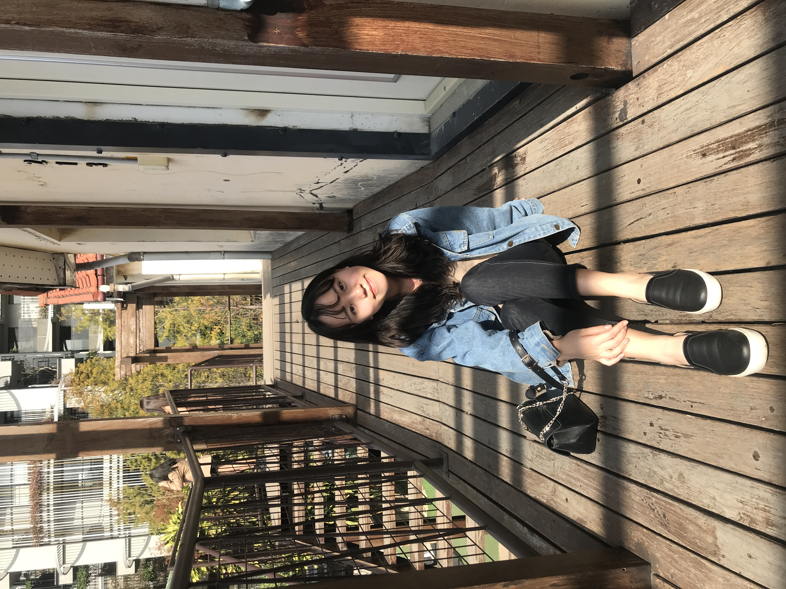
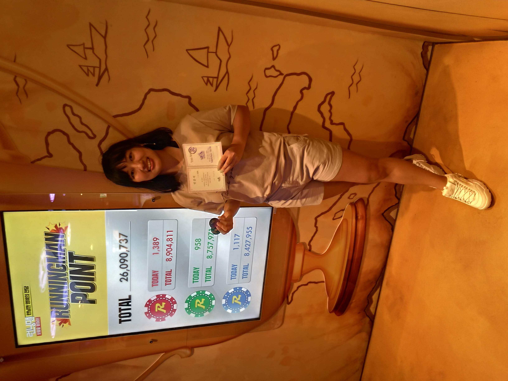

主題簡介
組員簡介
Line Bot 畫面展示
網頁後台畫面展示
專案目標
主題簡介
組員簡介
Line Bot 畫面展示
網頁後台畫面展示
專案目標
資想要你畢業
組員簡介
組員簡介
資想要你畢業
小組成員簡介都在這啦！！！
阮慕真
分工：Line bot、美工、報告
涂書萍
分工：網頁後台、文書
陳祥禎
分工：Line bot、文書
蘇姸寧
分工：網頁後台、文書、報告
心得
這次專題是我第一次寫Python、第一次接觸到Django、第一次和組員合作，從一開始沒有方向，慢慢地摸索討論，到開始實作後，發現有些想法不夠完全，或做不到，需要改善，然後完成，這是一個漫長的過程，最終我們成功開發出一款聊天機器人，我認為能夠成功是因為我們的團隊互相合作和配合，每一個人各司其職、互相幫補，也很感謝老師的帶領和教導，幫助我們困難和疑問。在整整一年的專題當中，覺得自己收穫很多，過程中不僅僅只是學習到如何寫程式，還有學習與人合作，還很開心可以用我的設計來美編我們的系統。

心得
從一開始找組員、設定主題、找指導老師到結束，非常幸運的在沒有任何爭執的情況下順利的完成了專題競賽！在做專題的過程中，出現過不知該如何解決狀況，但也與組員一起順利解決，解決的過程，更是讓我們共同進步與成長。做專題，不只是要合作，更要去嘗試新事物，攻破難關，能夠與組員一起完成，真的是非常非常的榮幸。最後，最要感謝的是老師每週的指導與建議，讓《資想要你畢業》順利產出，成功的寫出一個屬於我們的聊天機器人。

心得
不知不覺專題就結束了，在這一年間我們學到了很多，像是第一次用Python、第一次運用Django套件。經過這次專題我對於Line Bot了解了不少，不單單只是回復訊息，還有太多太多東西可以結合。另外我認為能夠與這些組員們同隊是相當幸運的，我們互相支持，互相討論，遇到意見不同的狀況也都可以冷靜地去做出最好的結論。最感謝的還是肇銘老師，這一年間老師給予我們相當多的建議，讓我們可以非常順利的做出《資想要你畢業》。
心得
在這短短的一年裡，我覺得我學到了許多。不論是學術方面，或是態度方面，這次的專題都讓我受益良多。學術方面，我從一開始對於Line Bot不甚熟悉，到後來可以大致了解其內容並設計出對應後台。這段時間，我認為我是有成長的，雖然可以改進的地方還很多很多，但我仍不後悔與組員共同學習這領域的東西。態度方面，對於事情看法、解決步驟，我認為亦是有進步的。感謝組員這段時間的辛勞，更感謝肇銘老師這段時間的指導。